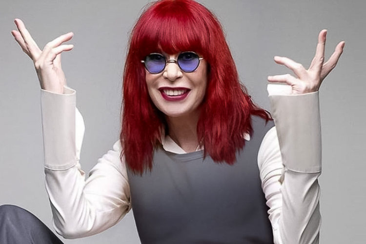

Rita Lee Jones de Carvalho
Compositora, Cantora

Biografia de Rita Lee
Rita Lee (1947-2023) foi uma cantora e compositora brasileira. Considerada uma das maiores representantes do Rock no Brasil ocupou um espaço único no universo da música popular brasileira. Rita Lee Jones nasceu em São Paulo no dia 31 de dezembro de 1947. Filha do dentista Charles Fenley Jones, um imigrante americano, e da pianista Romilda Pádua Jones, começou a tocar bateria com quinze anos de idade.Linha do tempo
1947 No dia 31 de dezembro de 1947 nasce Rita Lee.
1966 Junto com os irmãos, Sérgio e Arnaldo Baptista, Rita formou a banda "Os Mutantes".
1967 A banda se destacou ao acompanhar o cantor Gilberto Gil na apresentação da música Domingo no Parque, que ficou em
segundo lugar no III Festival da Música Popular Brasileira.
1968 Os Mutantes acompanharam o cantor Caetano Veloso na apresentação da música É Proibido Proibir, no Festival Internacional
da Canção (FIC).
1968 Os Mutantes acompanharam o cantor Caetano Veloso na apresentação da música É Proibido Proibir, no Festival Internacional
da Canção (FIC).
1970Acompanhada dos Mutantes, Rita gravou seu primeiro disco solo, Build Up. Nesse mesmo ano foi afastada do grupo.
1977 Rita Lee conheceu o músico Roberto de Carvalho e iniciou uma parceria musical e amorosa.
2012Depois de alguns anos sem gravar, em 2012, Rita Lee lançou o álbum Reza.
2023 Em 09 de maio de 2023, Rita veio a falecer aos 75 anos, devido a um câncer no
pulmão
Se quiser saber mais sobre Rita Lee, Clique Aqui
Fontes utilizadas na página: Wikipedia